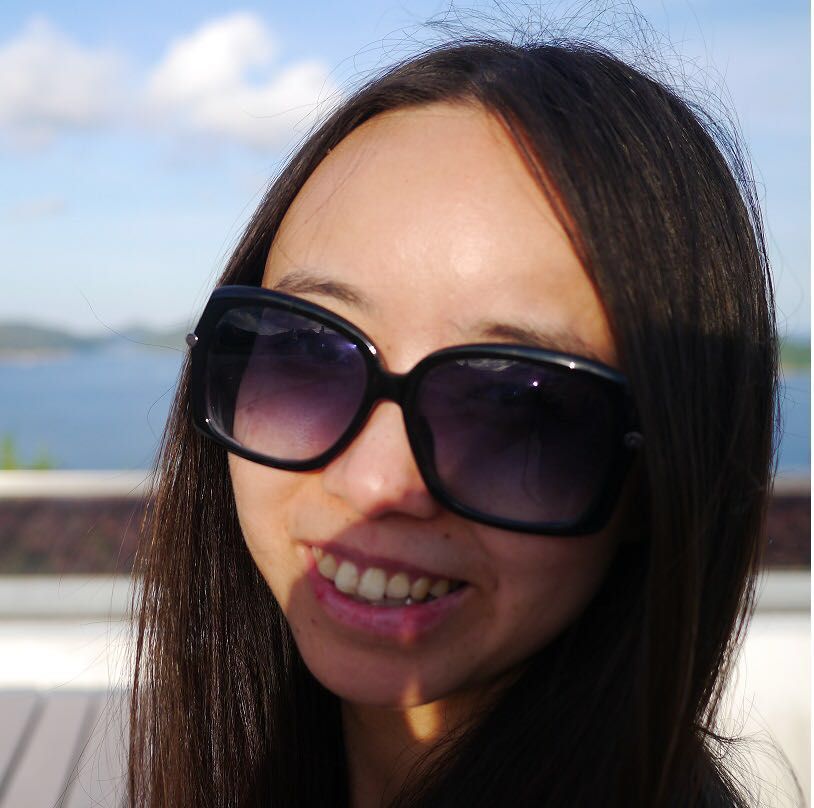
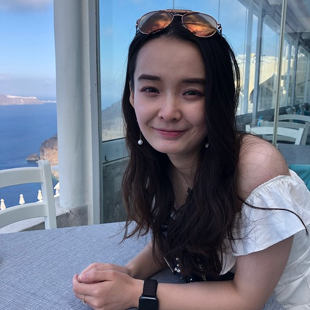

Principal Investigators
Prof. Pak Chung Sham 沈伯松
Suen Chi-Sun Professorship in Clinical Science
Chair Professor in Psychiatric Genomics
Former director, Centre for Genomic Sciences
Academic Lead, Centre for PanorOmic Sciences
Co-director, State Key Laboratory of Brain and Cognitive Sciences
Director of Academic Developments, Department of Psychiatry
BA (Cantab), BM BCh (Oxon), MSc (Lond), PhD (Cantab), MRPsych
Email: pcsh@am@hnoku.com.hk
GWAS NGS RNA Imaging Phenotype Stats
- Research interests
- Genetics and epidemiology of psychiatric disorders
- Statistical methodology for genetic and epidemiological studies
- Personal websites
HKU Scholars Hub Page
Departmental Page
 Google Scholar Page
Google Scholar Page ORCID
ORCID
- Publications
- Full up-to-date publication list at ResearchGate
- Other interests
- Game theory
Dr. Clara Sze-man Tang 鄧詩敏
Assistant Professor, Department of Surgery
Email: clar@atang@hnoku.com.hk
GWAS NGS
- Research interests
- Genetic basis of Hirschsprung disease
- Genetic factors associated with congenital heart disorder
- Personal websites
- ORCID
Associates
Larry Baum 包立怡
Research officer
Email: lwba@um@hk.comu.hk
GWAS NGS RNA Phenotype
- Research interests
- Genetics and biochemistry of brain diseases
- Personal websites
Google Scholar
- ORCID
- Other interests
- Writing children's books, effective altruism, hiking, music
Postdoctoral Fellows
Zipeng Liu 劉子朋
Postdoctoral Fellow
Email: zpl@iu07@hnoku.com.hk
GWAS RNA Imaging Phenotype
- Research interests
- Genetics of psychiatric disorders
- Bridging genomics, transcriptome and phenotype data
- Personal websites
- ORCID
- Other interests
- Talk shows, comedy and maybe ukulele in the future
Dr. Thuan Quoc Thach 石國順
Postdoctoral Fellow
Email: Thach.TQ@gmail.com
GWAS Survival analysis Time series Statistics
- Research interests
- Methods for the analysis of time series
- Statistical modelling of cancer data
- Personal websites
- ORCID
- Other interests
Yanbing Wang 王雁冰
Postdoctoral Fellow; Ph.D. in Biostatistics
Email: ybwang@hku.hk
GWAS Statistics
- Research interests
- Statistical genetics
- Personal websites
- ORCID
- Other interests
Graduate Students
Zhenyang Guo 郭振洋

Former Ph.D. Student in Bioinformatics and Computational Genomics
Email: zhenya@ngguo@outnoloo.comk.com
NGS RNA
- Research interests
- RNA-seq and RIP
- Genetics and epigenetic of gene expression
- Personal websites
- ORCID
- Other interests
- Cycling
Yiming Qin 秦一鳴
Postdoctoral Fellow and Formal Ph.D. Student in Bioinformatics and Computational Genetics
Email: yim@ingdan@gmnoai.coml.com
NGS
- Research interests
- Deciphering gene regulatory network with NGS data
- Functional genomics
- Genetic variation
- Personal websites
ResearchGate
- ORCID
- Other interests
- Indoors and outdoors sports (like table tennis, badminton, fitness, hiking, sports and rock climbing); photography
Rui Ye 葉睿
Former Ph.D. Student in Bioinformatics and Cancer Genome
Email: yer@ui@connect.hnoku.com.hk
NGS Stats
- Research interests
- Genetics of psychiatric disorders
- Cancer genome
- Low-frequency mutation
- Structural variations
- Statistical and computational genomics
- Other interests
- Table tennis, slow running, swimming, cooking
Sunny Xuehan Zhuang 莊雪寒
Former Ph.D. Student in Genetic Epidemiology and Complex Diseases
Email: su@nnyzxh@connnoect.hk.comu.hk
GWAS NGS
- Research interests
- Copy-number variation
- Personal websites
- ORCID
- Other interests
- Singing
Tian Wu (Talia) 吳天
Ph.D. Student in Statistical Genetics and Behavioral Genetics
Email: u30@060no94@connect.hk.comu.hk
GWAS Stats
- Research interests
- Statistical methodology for genetic studies
- Behavioral genetics
- Personal websites
- ORCID
- Other interests
- Yoga, meditation
Justin D. Tubbs
Ph.D. Student in Behavioural Genetics and Bioinformatics
Email: tub@bsjnod@hk.comu.hk
GWAS Imaging Phenotype Stats
- Research interests
- Psychiatric genetics
- Statistical methodology for large-scale genetic data
- Personal websites
- ORCID
- Other interests
- Travelling and music
Qiongfen Lin 林瓊芬
M.Phil. Student
Email: qfl@inon@connect.hku.com.hk
NGS Phenotype Stats
- Research interests
- Genetics of congenital diseases
- Personal websites
- ORCID
- Other interests
- Travel, photography, anime
Lane G. Chen 陳國藍
Ph.D. Student in Statistical Genetics
Email: lan@echenhkuno@gmai.coml.com
GWAS Imaging Phenotype Stats
- Research interests
- Statistical genetics of genetic architectures of complex traits
- Mendelian randomization
- Application of regularized regression and random matrix theory
- Personal websites
- ORCID
 Personal blog
Personal blog Github
Github
- Other interests
- Complex system science; geo-political science; neural network
Zewei Xiong
Ph.D. Student in Bioinformatics
Email: xiongz@wno@connect.hk.comu.hk
GWAS Stats
- Research interests
- Statistical methodology for genetic and epidemiological studies
- Personal websites
- ORCID
- Other interests
- Psychology
Yuanxin Zhong 鐘苑心
Ph.D. Student in Neuroimaging and Bioinformatics
Email: yua@nxinonzhong.hk@gma.comil.com
GWAS Imaging Phenotype
- Research interests
- Genetics and neuroimaging of psychiatric disorders
- Personal websites
- ORCID
- Other interests
- Movies, cooking
Na ZHAN (Emma) 戰娜

Ph.D. student
Email: nazhan@connect.hku.hk
GWAS Epidemiology
- Research interests
- Epidemiology and genetics of psychiatric disorders
- Personal websites
- ORCID
- Other interests
- Reading, Writing, Cooking, Philosophy
Former Members
Dr. Stacey Cherny
Former assistant professor.
Dr. Miaoxin Li
Former research assistant professor.
Dr. Maria Mercedes Garcia-Barcelo
Former associate professor.
Dr. Johnny Kwan
Former Ph.D. student and post-doctoral fellow.
Dr. Hon Cheong So
Former Ph.D. student.
Dr. Hongsheng Gui
Former Ph.D. student and post-doctoral fellow.
Dr. Xiaowei Zhang
Former Ph.D. student and post-doctoral fellow.
Dr. Desmond Campbell
Former post-doctoral fellow.
Dr. Xueya Zhou
Former post-doctoral fellow.
Dr. Mulin Jun Li
Former post-doctoral fellow.
Dr. Qiang Wang
Former visiting scholar.
Dr. Youling Guo
Former Ph.D. student.
Dr. Zhenxing Yang
Former post-doctoral fellow.
Dr. Peikai Chen
Former post-doctoral fellow.
Dr. Timothy Mak
Former post-doctoral fellow.
Dr. Zipeng Liu
Former post-doctoral fellow.
Dr. Robert Porsch
Former Ph.D. student and post-doctoral fellow.
Dr. Beatrice Wu
Former Ph.D. student.
Dr. Shing Wan Choi
Former Ph.D. student.
Dr. John Wong
Former Ph.D. student.
Dr. Yan Li
Former Ph.D. student.
Dr. Jacob Hsu
Former Ph.D. student.
Dr. Yiming Li
Former Ph.D. student and post-doctoral fellow.
Dr. Talia Wu
Former Ph.D. student.
Dr. Justin D. Tubbs
Former Ph.D. student.
Dr. Saloni Dattani
Former Ph.D. student.
Dr. Sandy Lam
Former post-doctoral fellow.
Dr. Jill Ding
Former Ph.D. student.
Dr. Hang Xu
Former Ph.D. student.
Dr. Ken Yip
Former Ph.D. student.
Dr. Zhenyang Guo
Former Ph.D. student.
Dr. Rui Ye
Former Ph.D. student.
Dr. Sunny Zhuang
Former Ph.D. student.
Dr. Zhixin Li
Former Ph.D. student.
Dr. Md Anwarul Karim
Former Ph.D. student.
Juilian Yeung
Former M.Phil. student.
Dr. Owen Qin
Former M.Phil. student.
Silvia Deng
Former research assistant.
Zhicheng Pan
Former research assistant.
Lin Jiang
Former research assistant.
Dr. Julia Alisha Andre
Former research assistant.
Dr. Bart Baselmans
Former research assistant.
Dr. River Lee
Former research assistant.
Dr. Thomas Malzac
Former research assistant.
Dr. Yamin Zhang
Former visiting student from Sichuan University.
Justin P. Cheung
Former visiting student.
Wynn Cheung
Former visiting student.
Yue Ji
Former research assistant.
Zoe Shu
Former visiting student.
Lawrence Ng
Former visiting student.
Dr. Yiming Qin
Former Ph.D. student and post-doctoral fellow.
Dr. Hongcheng Yao
Former Ph.D. student and post-doctoral fellow.
Dr. Miaoxin Li 李淼新
Former Research Assistant Professor, Department of Psychiatry
BSc (Hunan Normal Uni.), MSc (Hunan Normal Uni.), PhD (HKU)
Email: lim@x54@gmnoail.com.com
GWAS NGS RNA Phenotype
- Research interests
- Methodological innovations in bioinformatics and statistics for genetic mapping of human diseases
- Genetic and genomic analysis for a series of specific human diseases
- Personal websites
Personal Page
- ORCID
- Selected publications
- Selected publication list from 2004 to 2015
Timothy Mak 麥善恆
Former Postdoctoral Fellow
Email: timo@thy.mak@hnoku.com.hk
GWAS Stats
- Research interests
- Statistical methodology
- Statistical genetics
- Personal websites
- ORCID
- Other interests
- Music
Mulin Jun Li
Former Postdoctoral Fellow
Email: mul@in0424.li@gmnoai.coml.com
GWAS NGS
- Research interests
- Functional genomics
- Personal websites
- ORCID
Yan Li 李艷
Former Ph.D. Student
Email: ya@nlea@con.comnect.hnok.comu.hk
GWAS NGS Phenotype Stats
- Research interests
- Identification of common and rare genetic risk factors for lumbar disc degeneration
- Personal websites
Linkedin
- Other interests
- Photoshop, travelling, photography
Jacob Shujui Hsu 許書睿
Former Ph.D. Student in Bioinformatics and Statistical Genetics
Email: jac@obhsu@con@nect.hnoku.com.hk
NGS Phenotype
- Research interests
- Clinical sequencing studies
- Amyotrophic lateral sclerosis (ALS)
- Trio-based rare diseases
- Human gene level pathogenicity
- Other interests
- Baseball
Yiming Li 李一鳴
Former Ph.D. Student in Bioinformatics and Statistical Genetics
Email: liy@m1018@con.comnect.hknou.h.comk
GWAS Imaging Phenotype Stats
- Research interests
- Computational biology, more specifically using machine learning methods to analyse phenotypic, brain imaging and metabolomic data
- Personal websites
- ORCID
- Github Page
- Other interests
- Creative writing, alternative rock, programming
Jill Jiahong Ding 丁佳虹
Former Ph.D. Student in Behavioural Genetics and Bioinformatics
Email: zcjt@g61@gnomail.com.com
NGS Imaging Phenotype
- Research interests
- Imaging genetics of psychiatric disorders
- Personal websites
- ORCID
- Other interests
- Evolutionary psychology
Hang Xu 徐航
Former Ph.D. Student in Bioinformatics and Computational Genomics
Email: qingha@ng.xu@gnomail.com.com
NGS Stats
- Research interests
- Statistical methodology for NGS
- Fusion genes detection
- Personal websites
- ORCID
- Other interests
- Rubik's cube, card games and snooker
Dr. River Lee 李江
Julia Alisha Andre
Former Research Assistant
Email: jul@ia.alisha@gmanoil.c.comom
Phenotype
- Research interests
- Behavioural genetics
- Working memory, psychosis and depression
- Cognitive interpretation and attentional Biases
- Preventive research
- Twins study
- Personal websites
- Other interests
- Psychotherapy, counselling, cross-cultural research
Others
Former non-HKU lab members Dr. Shuan Purcell, Dr. Benjamin Neale and Dr. Tao Li were influenced and supervised by Prof. Pak Sham before he moved from the UK (KCL) to HKU.
HKU collaborators For over a decade, the Sham lab have been an active part of the HK Spine Cohort (Disc Degeneration Disease) team under LKS faculty of Medicine, HKU. Other PIs in the cohort include Prof. Kathryn Cheah, Prof. Danny Chan and Prof. Kenneth Cheung. We are also working closely with the lab of Dr. Dora Yan Zhang from Dept. of Statistics and Actuarial Sciences, HKU on aspect of methodology development.